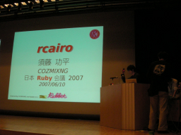
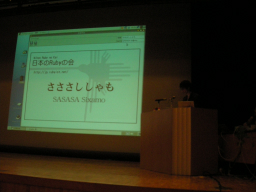

rcairo （須藤 功平）
- スピーカー
- 須藤 功平 - COZMIXNG
- プロフィール
- オープンでフリーでリポジトリが公開されていてパッチを受け入れてくれるプロジェクトが好き。
Related projects: rcairo, Rabbit, RSS Parser, Ruby-GNOME2, Ruby/Subversion, Ruby/ActiveLdap, ... - 講演時間
- 16：20〜16：35
- 講演者による資料
- http://pub.cozmixng.org/~gallery/kou/screenshot/rabbit/RubyKaigi2007/
HTML: http://pub.cozmixng.org/~kou/archives/RubyKaigi2007/
PDF: http://pub.cozmixng.org/~kou/archives/RubyKaigi2007/rcairo.pdf
上記HTMLとPDF: http://pub.cozmixng.org/~kou/archives/RubyKaigi2007.tar.gz
「ImageMagickのソースはすごいきたないです。」
自己紹介
- 最近
- rcairo
- ActiveLdap - ほんとはsambaとLDAPの管理ツールつくりたかったんですけど下のほうへ下のほうへ。
- 予定
- RSS Parser
- Rabbit - 世界で初めてうさぎとかめの動画が表示されているプレゼンソフトです
rcairo?
cairo - Cのライブラリ。これをRubyから使えるようにした。最近だと「ブリッジ」。
cairoというのは、
- 点線をまあるく書いて模様にしたり
- 透明度を指定して画像を重ねたり
- グラデーションしたり
- アンチエイリアスしたり
- 線の上にテキストを乗せたり
- ラビーちゃんを拡大縮小回転移動したり
- 「マスコットって言えばいいんですか？」
- マスコット駆動開発！
- 「Matzをスリムに！」
- スポットライトとか
cairoを使っているのは
- rcairo
- gtk2
- 開発版のfirefox
- mono
- eclipse
なぜcairo
- X、Windows、Macにも描画できる
- PDFやpngにできる
どのように使うか
- サーフェス(出力先)を指定する
- コンテキストを生成する
- コンテキストに描画命令を送る
アプリケーションは出力先を気にしなくていい！一つのAPIでたくさんの出力に対応できる！
例:名刺作成アプリケーション
gtkでGUIを作り、プレビューする部分はどのプラットフォームでも動く。 pngでみんなにみせて、PDFで出力する。
デモ: 「いまいちばん輝いている男性」ささださんの名刺を作ってみる。
もっとrcairo
- るびま19号の記事
- 1.5.0リリース
- API改良
- Win32対応 (村松吉直さん)
- リファレンスマニュアル
を見てください
そういえば
- Mac用のrabbitのバイナリパッケージもでました。
- RabbitはPDFビューアにもなります。


Keyword(s):
References:[RubyKaigi2007速報ログ]